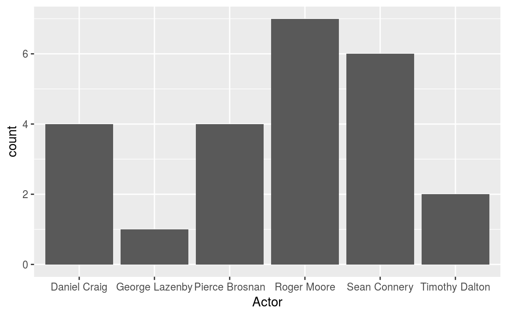
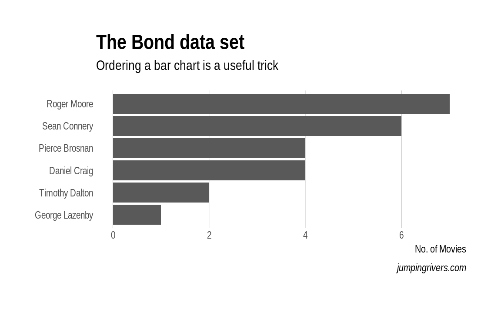
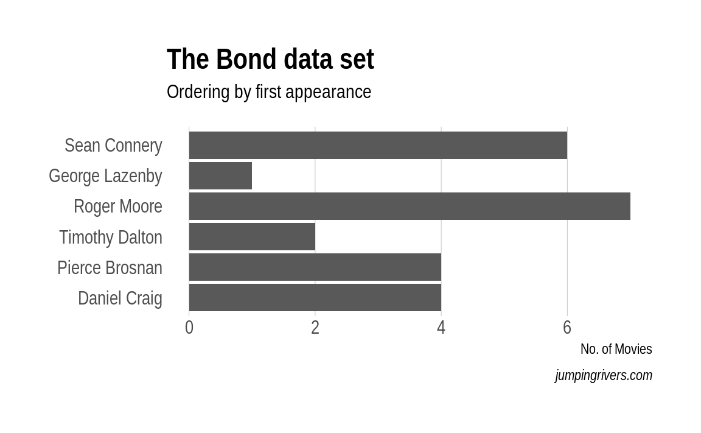

Chapter 3 What, why and how of visualisation
A picture paints a thousand words - Frederick R. Barnard
Data visualisation is an old topic; but in the last few years, it’s become particularly trendy. With the correct visualisation, we can highlight key features that don’t require any fancy statistics.
Prerequisites
We could have an entire course on creating graphics, but in this chapter we’ll concentrate on the fundamentals. To make this section concrete, we’ll use the ggplot2 package within R. However, there are many libraries available to generate the graphics in other languages. For example, in Javascript we could use d3, or seaborn in python.
The ggplot2 and hrbrthemes packages can be easily installed via
install.packages(c("ggplot2", "hrbrthemes"))and loaded in the usual way, e.g.
library("ggplot2")
library("hrbrthemes")3.1 Historical visualisations
John Snow4 created a simple dot map to illustrate the cluster of cholera cases around a water pump - figure 3.1. This allowed him to show the connection between the quality of the water source and cholera cases. He was able to demonstrate that the Southwark and Vauxhall Waterworks Company was taking water from sewage-polluted sections of the Thames and delivering the water to home. Thereby leading to an increased incidence of cholera. This study is a major event in the history of public health and geography. It is regarded as the founding event of the science of epidemiology.

Figure 3.1: John Snow dot map of cholera cases (https://en.wikipedia.org/wiki/John_Snow).
The Hereford Mappa Mundi dates from around 1300 - figure 3.2. It is currently on display at Hereford Cathedral in Hereford, England. It is the largest medieval map known still to exist. At the centre of the map is Jerusalem, in the bottom left is the UK, at the top is the garden of Eden (some of the data points are approximate!)
Figure 3.2: Hereford Mappa Mundi (https://en.wikipedia.org/wiki/Hereford_Mappa_Mundi).
Florence Nightingale is described as “a true pioneer in the graphical representation of statistics”. Her diagram about the causes of mortality in the army (figure 3.3), was ground breaking. Florence’s graph showed that sanitation was a major killer in the army. After successfully lobbying the government, the mortality rate dropped from 69 to 18 per 1000.

Figure 3.3: Diagram of the causes of mortality in the army in the East by Florence Nightingale.
Visualisation is incredibly important. Whenever I get a data set, I automatically start generating plots to get a feel for the data. It helps us to detect interesting patterns in the data; remember plotting can save lives (if you’re Florence Nightingale).
3.2 Scatter plots
A scatter plot has horizontal and vertical axes to plot data points. Typically they are used to show how one variables is affected by another. Let’s start with a simple scatter plot of looking at whether the Bond movies have become more violent over time. In ggplot, we first specify a canvas and then add subsequent layers using the + operator
ggplot(bond, aes(x = Number, y = Kills)) + # Create a canvas
geom_point() # Add a layer of pointsFigure 3.4: Has Bond got more violent?
On the \(x\)-axis we have the movie number (chronological movie order) and on the \(y\)-axis we have the number of kills made by Bond. The scatter plot does show a general trend, with an increased number of deaths in latter movies.
Figure 3.4 is OK, but could be significantly improved.
There’s a lot going on in the code used to generate the figure. The first argument is the data frame bond, while aes argument specifies what elements in the plot should change with a variable.
First we’ll use colour to differentiate between actors and fix the axis limits
g = ggplot(bond, aes(x = Number, y = Kills)) + # Create a canvas
geom_point(aes(colour = Actor)) + # Add a layer of points
ylim(c(0, 50))
g # With ggplot we can store the graph constructFigure 3.5: Using colour to differentiate between actors.
By using colour, we can see that Pierce was a particularly violent Bond, with the green points in the top right hand corner.
Next we can add a trend line to get a feel for the relationship over time. The stat_smooth() layer adds a local trend line. Essentially, the line moves along the \(x\)-axis and the gradient is only affected by nearby points.
g_smooth = g + stat_smooth(colour = "steelblue", se = FALSE, method = "loess")
g_smoothFigure 3.6: Capturing the trend.
This graph now contains some useful insight.
- The number of kills appears to be increasing with each bond movie.
- Pierce Brosnan (the green points) liked killing people.
- Daniel Craig’s movies didn’t contain (that) many deaths.
3.2.1 Styling your plot
If the graph is only going to be consumed by the data scientist, then there is no need to spend time polishing the final product. However if the graph is to be used to convince or highlight issues for other people, then some time and effort needs to be spent.
ggplot2 has the concept of themes that can style the plot. Here we use the hrbrthemes package. It provides
typography-centric themes and theme components for ggplot2
Basically, it’s opinionated. The package enables us to change the background colour, tweak the palette and add proper labels, with minimal effort
library(hrbrthemes)
g_smooth +
theme_ipsum() +
scale_color_ipsum() +
labs(x = "Movie number",
y = "No. of Bond Kills",
title = "Kills through time",
subtitle = "Is there a relationship?",
caption = "Pierce wasn't a nice man!") Figure 3.7: Pimping your graph with the hrbrthemes package.
With little effort, we’ve gone from something basic - figure 3.4 - to a high quality, publication ready figure, 3.7. Unfortunately, we have limited time to spend on graph aesthetics.
Exercise / Q & A
- Does alcohol consumption change through time?
- Does there appear to a relationship between alcohol and the number of kills?
- Change method from
smoothtolm.
3.3 Histograms
A histogram is a graphical representation of the distribution of continuous, numerical data. If the area under the graph adds up to one, then it is a probability distribution. Constructing a histogram is straightforward; we divide the entire range into a series of intervals and count how many values fall into each interval. Bins do not have to be the same size (but they probably should be in general).
We’ll start with a histogram of users ages from the OKCupid dataset. To create a histogram, we use the geom_histogram() function
ggplot(cupid, aes(x = age)) +
geom_histogram(binwidth = 1) This creates the left plot in figure 3.8.
Figure 3.8: Age distribution of the OKCupid data set.
Notice in the code we’ve specified binwidth = 1. This means that the binwidth is equal 1 year. The default (in ggplot2) is to create a plot using 30 bins, it’s always a good idea to explore the effect of varying the binwidth. In particular, if you look carefully at the plot where the binwidth = 1, we can see a spike at age = 42. Another interesting feature is the long tail - this is an example of a right skewed or positively skewed data set.
Often we want to split a plot up by different variables, for example, the users gender. This is easy with ggplot2; we just add on an additional call to facet_wrap()
ggplot(cupid, aes(x = age)) +
geom_histogram(binwidth = 1) +
facet_wrap(~ sex) +
coord_cartesian(xlim = c(18, 80))Figure 3.9: OKCupid age distribution by gender.
By splitting age by gender, two interesting features become apparent from figure 3.9
- There are many more male OK Cupid users than female (not surprising).
- The general age distribution looks similar between sexes.
- The most surprising aspect is that the spike in age 42 is due to female users. This could be by pure chance, users lying about their age, or a mistake in data entry.
3.4 Density plots
A downside of using a histogram, is that putting two histograms on top of each other makes the graphic cluttered and unclear (of course you can use panels as above). An alternative method is to use a kernel density estimator. Essentially we draw a line around the histogram.
ggplot(cupid, aes(x = age)) +
geom_density(aes(colour = sex)) +
xlim(c(18, 80))Figure 3.10: Kernel density plots of the ages.
Since the distributions are represented as lines, we can plot multiple distributions on top of each other. By plotting in this way, it becomes obvious the distributions of each gender are similar. However, we have smoothed over the bump at age 42.
3.4.1 Detailed explanation
This section aims to give gentle introduction to how kernel density plots are actually constructed. Behind the scenes, there’s some nice mathematical theory the underpins this graph. However, we’ll avoid the maths and concentrate on the intuition.
Suppose we have three points: (-2, -1, 2). These points are shown in figure 3.11 (a) as blue crosses. Around each point we draw a kernel - figure 3.11 (b). The kernel can be any non-negative (but typically symmetric) function that integrates to one. For example, it could be a
- rectangle;
- triangle;
- Gaussian (or Normal) density;
- Epanechnikov function.
In this example, we’ll use the most common kernel, a Gaussian or bell shaped curve. Next we combine the kernels around each point into a single common curve (figure 3.11 c). Finally, we normalise the area under the kernel to be \(1\).
Figure 3.11: How to construct a kernel density estimate.
The tricky mathematical part deals with what kernel we should use and how wide that kernel should be. A wide kernel has the effect of flattening out our histogram shape, similar to having fewer bins. A narrow kernel has the opposite effect. Intuitively, when we have many points, the kernel should be narrower.
3.5 Boxplots
A box and whisker plot, sometimes simply called a boxplot, is another way to represent continuous data. This kind of plot is particularly useful for comparing two or more groups, by placing the boxplots side-by side.
The central bar in the “box” is the sample median. The top and bottom of the box represent the upper and lower sample quartiles. Just as the median represents the 50% point of the data, the lower and upper quartiles represent the 25% and 75% points respectively.
local(source("code/f3_boxplot.R"))Figure 3.12: Boxplot description.
The lower whisker is drawn from the lower end of the box to the smallest value that is no smaller than 1.5IQR below the lower quartile. Similarly, the upper whisker is drawn from the middle of the upper end of the box to the largest value that is no larger than 1.5IQR above the upper quantile. Points outside the whiskers are classified as outliers.
If we wanted to compared how age varies by income level5 then a boxplot is perfect
# Missing values are represented with a -1
ggplot(cupid, aes(x = income, y = age)) +
geom_boxplot()Figure 3.13: Income by age of the OKCupid data set.
The figure highlights a gradual increase of income with age. However, for extreme incomes it drops. I suspect this pattern is particular to San Francisco!
3.6 Barplots
A bar chart or bar graph is a chart that presents grouped data with rectangular bars with lengths proportional to the values that they represent. The bars can be plotted vertically or horizontally.
Let’s look again at the bond dataset. To determine the number movies by each star we use geom_bar()
ggplot(bond) +
geom_bar(aes(x = Actor))
Typically ordering the axis alphabetically isn’t best. In this case, we could order the either by the number of movies, or by the date the actor first appeared. Again with a few minor tweaks we can go from a plot that is OK, to a plot that is informative and attractive.
